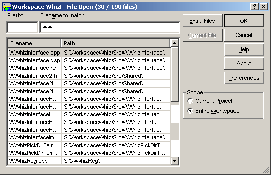

The Filename to match: fields allows incremental matching of a filename. See Matching Files for more information.
The accompanying Prefix: field provides an easy way of storing a common file prefix. The text in the Filename to match: field is appended to the prefix. See Matching Files for more information.
Right clicking on a file will activate the File Context Menu.
The files considered for the file search can be manipulated via the Scope group. Selecting Current Project will only show files within the active Developer Studio project. Selecting Entire Workspace will show all files in the Developer Studio workspace, including Extra Files.
Manipulate extra files (including workspaces and projects) considered for the file list by pressing the Extra Files button. These extra files are usually not in the open Developer Studio workspace. Extra files are very useful for external libraries which the application uses. See Extra Files for more information.
Pressing the Current File button will activate the File Context Menu.
Press OK to open the selected files.
Press Cancel to close the dialog without opening any files.
Choose Help to activate the context-sensitive help.
Choose About to activate the Workspace Whiz About dialog. From the About dialog, it is possible to Order Workspace Whiz!
Choose Preferences to activate the Preferences dialog.